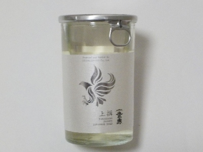
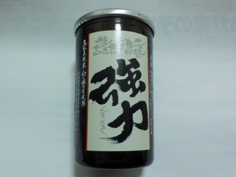
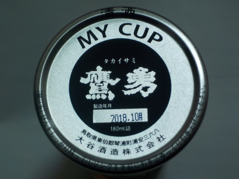

大谷酒造の鷹勇 上撰。
2024/11/16

単色だけどシルバーが使ってあり、セレモニーっぽい感じがするパッケージです。
辛口で濃厚な味だなと思いました。醸造アルコールが入ってこの味は濃いな。
個人的にはワンカップには蓋が付いてるとうれしいです。これはなくてちょっと残念でした。
鳥取県東伯郡琴浦町浦安368
2024/11/16

単色だけどシルバーが使ってあり、セレモニーっぽい感じがするパッケージです。
辛口で濃厚な味だなと思いました。醸造アルコールが入ってこの味は濃いな。
個人的にはワンカップには蓋が付いてるとうれしいです。これはなくてちょっと残念でした。
2018/10/21
名前が「強力」なので、個性的な味かな？と思ったんですが案外マイルドでした。


アルコール15%の普通の日本酒ですが、アルコール感があまりなく、とっても飲みやすかったです。 ちょっといいお酒は味が違うなって実感できるお酒でした。